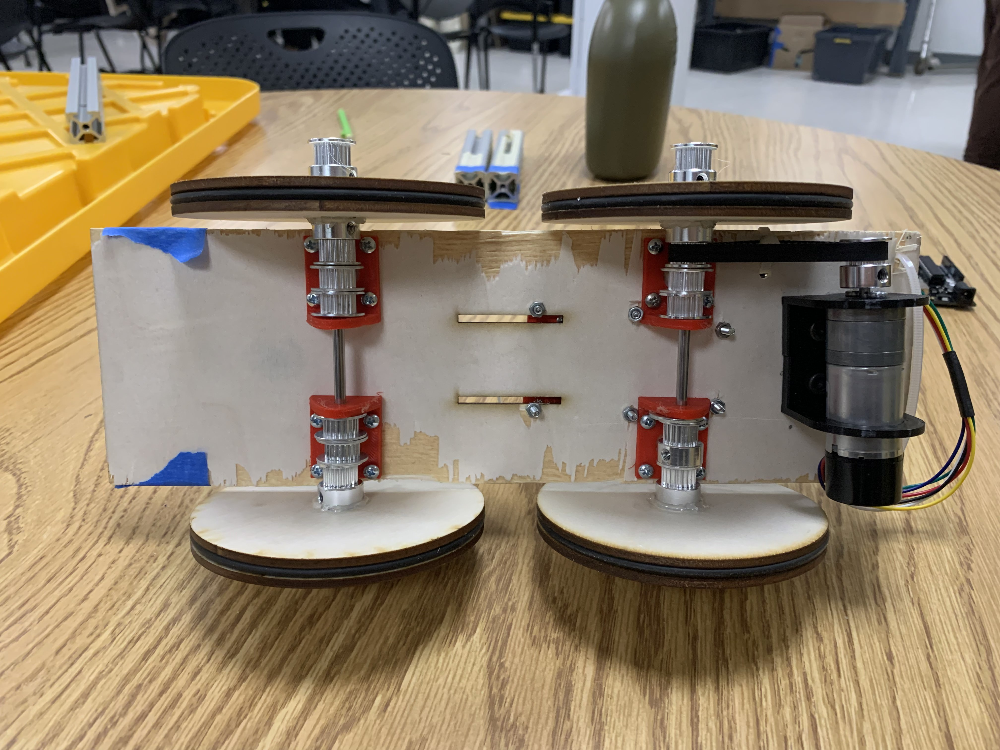
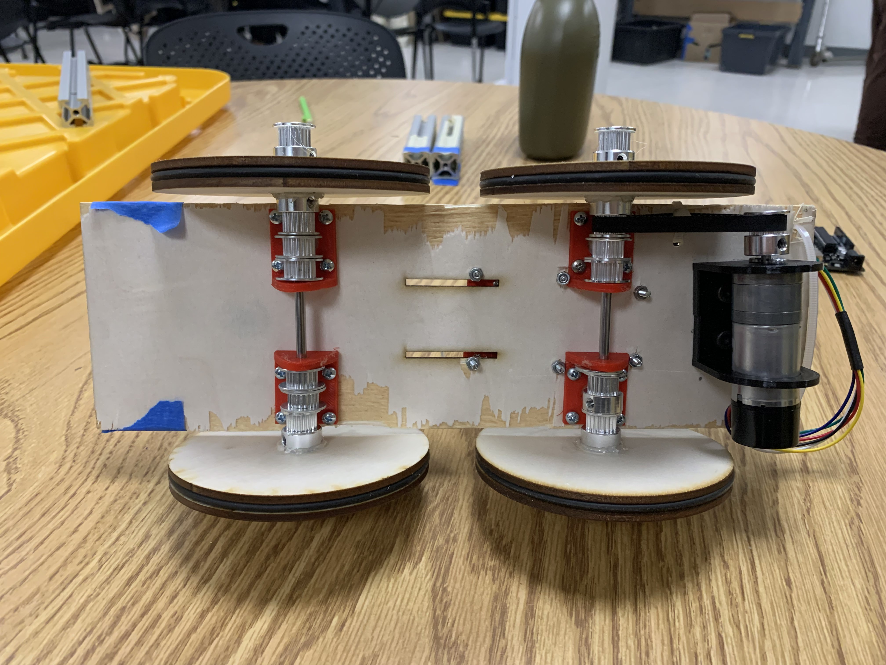

These are all the projects I have done for my undergraduate ME360 product design class from Boston University. The goals of this class were to learn how to design and prototype different engineering projects. These skills were developed through three different projects: the gasket project, the 2.5 DOF Cartesian motion sytem, and the motor speed controller.
The first project was to design a gasket that would be located on an aluminum block with pre machined holes, slots, and alignment pins. This was an exercise in using calipers to accurately measure every dimenion of the block and then designing a gasket that would fit perfectly on the block. Below you can see the sketch of the gasket along with the measured dimensions (all values are plus or minus 0.001" due to caliper accuracy). Next, a CAD model was made of the gasket in order to define toolpaths in GibbsCAM. Once tools paths were defined, a thin piece of plastic was placed in a CNC mill to perform the toolpaths. Things to note were the double sided tape used to hold the plastic in place. The final product was a gasket that fit perfectly on the aluminum block.


The second project was to design and build a motion system with 2.5 degrees of freedom (DOF). This was acomplished with four different NEMA 17 stepper motors and a driver board that accomodated power control and directional logic for each motor. We used Repetir as a program for sending GCODE to an Arduino library that would then send the appropriate signals to the driver board. The motion system was designed to move an end effector in the x, y, and z directions. The x and y directions were controlled by stepper motors on linear rails with a series of belts and pulleys. The z direction was controlled by a stepper motor that would move a rack and pinion setup. The z axis included a stamp pad which would be used to stamp a piece of paper. In our footprint we included an ink pad and an envelope so the system could stamp an envelope. The final product was a motion system that could move an end effector in the x, y, and z directions. All components were 3D printed.
The final project was to design a system that transports a foot long beam of 8020 aluminum extrusion a five foot distance and back, stop to stop. The challenge was that the beam must be completely free and not connected to the platform it sits on. The bar would be supported by its bottom face only. The objective was thus to minimize the time required to transport the bar there and back. To begin, a simulation was done in SolidWorks to determine the maximum acceleration of the car that would cause it to tip. This agreed closely with the theoretical value calculated with first principles. The cart was made out of some balsa wood, 3D printed motor mounts, 3D printed axle mounts, and wheels that were laser cut and included an O-Ring. The project also required the use of an encoder to make sure the acceleration profiles of the car were met. The final product was a little cart that held the 8020 extrusion on the top and was able to transport the rod there and back in about 15 seconds.
 
